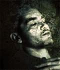

Forums galactiques > Assemblée Galactique : diplomatie officielle > Présentations
Pages : 1 2 ... 11 12 13 ... 31 32
| Guilthanas Respect diplomatique : 23 28/08 ETU 01:49 | Score : 11 Détails Les portes s’ouvrirent , et le héraut de l’assemblée annonça :
Votre attention à tous ! Un représentant de la planète Sylvanas souhaite s’entretenir avec l’assemblée ! Le représentant entra, et l’assemblée paru l’observer alors avec une étrange curiosité. A travers sa grande capuche rabattue et sa lourde robe sombre aux motifs étrange, il eu été impossible de dire s’il s’agissait d’une homme ou d’une femme, ou encore d’une quelconque créature humanoïde. La silhouette était petite, car très voûtée, ce qui donnait l’impression d’observer une personne d’un âge très avancée. Pourtant sa démarche était energétique, et son pas était sur. Ne dit t’on pas que la sagesse vient avec l’âge ? Pourtant aucune sagesse ne transpirait de cette sombre silhouette, bien au contraire. Une sorte d’aura malsaine et répulsive semblait dégager d’elle. Ceux de l’assemblée qui avaient connu de grandes épidémies sur leur monde natal avaient peut-être déjà ressenti cette impression face à un pestiféré. Quoi qu’il en soit cette apparition se déplaçait d’un pas vigoureux vers le centre de l’assemblée. Sa longue robe donnait en fait plutôt l’impression qu'elle glissait sur le sol. Une fois au centre de l’assemblée, elle leva lentement les bras, ce qui retroussa légèrement ses manches laissant apparaître deux mains d’aspect cadavérique : on eu plutôt dit des serres tellement les articulations étaient visibles sous la peau grise. Un hoquet de stupeur parcouru la salle lorsque le représentant révéla son visage. On eu dit une momie : ses traits cadavériques étaient tirés, comme si la peau était en train de perdre toute élasticité. Ses cheveux clairsemés sur son crâne livide étaient d’une blancheur affolante. Ses yeux enfoncés profondément dans des orbites noires semblaient définitivement morts. Ses lèvres étaient déchirés et ses dents grêlées de trous. Pourtant aucune odeur de pourriture ne parvenait aux nez de l’assemblée. C’est avec une voix étrangement claire et forte que le représentant s’adressa à l’assemblée : Mon… Maître, Guilthanas, m’a fait l’immense… honneur de me choisir pour me présenter à vous aujourd’hui. Sylvanas connaît une ère nouvelle, et il est certain que maître fera bientôt parler de lui. Le ricanement qui s’en suivit donna l’impression que le représentant allait cracher ses poumons. Pourtant il repris d’une voix toujours aussi claire : J’ai été choisi pour révéler des choses qui ont été depuis trop longtemps oubliées ou ignorées. Regardez moi, regarder moi… Car je suis l’avenir de l’humanité. Mon corps à été choisi comme offrande. Prenez le. Et sur ces mots, le représentant tomba face au sol, mort. | ||
| Alpha_04 Respect diplomatique : 23  28/08 ETU 15:24 | Score : 6 Détails Un homme vêtu d’une armure bleu et blanche endommagé,
grand équipé d’un blaster républicain entra dans l’AG…. Bonjour a tous je suis le commandant clone alpha_04 je suis nouveau dans cette galaxie je viens en paix pour l’instant !(car je recherche actuelement une coalition et une fois que mes enemies seront proclamés je serais sans pitié) | ||
| Wyven Respect diplomatique : 12  28/08 ETU 16:46 | Score : 12 Détails Un jeune commandant d’apparence modeste mais dégageant une certaine aura, déambule dans l’assemblée. Son visage est sombre, il a une barbe de quelques jours, les traits marqués. Son visage semble refléter une vie difficile et exigeante.
C’est le commandant Wyven. … Il entre dans une salle... Sans attendre il se dirige vers le pupitre et prend la parole Honnorable assemblée, chers collègues, Je viens en paix me présenter à vous, vous racontez mon périple, l’histoire de ma vie et le rôle que je compte remplir auprès de vous… Mon nom est Wyven, fils de Tyrven et Norema. Mon existence est le fruit de l’Amour interdit entre le chevalier Tyrven et l’impératrice de Nagoya… ma mère… Amour d’abord secret, puis révéler pas un jeune Aristocrate aussi ambitieux et opportuniste que peut l’être un homme assoiffé de pouvoir et dénué d’Amour et de principes. …Ce traître de Léotide, qui m’avait pourtant, dans mon adolescence, servit de maître d’armes et d’ami… Sur son visage on voit la contraction de ses muscles, la tension dans ses yeux. De toute évidence ces souvenirs sont encore douloureux Reprenant ses esprits Bref, une fois mon existence révélée, je suis devenu le prétexte d’une chasse au sorcières galactique dont le principal inquisiteur, la personne chargée de me retrouver, cet opportuniste machiavélique de Léotide, su convaincre l’empereur des bienfaits de ma capture. Le but était pout l'empereur de recouvrer son honneur perdu par l’affront de ma naissance. Je devais mourir de sa main ! En conséquence, les moyens mis à la disposition de ce traître furent, à la mesure de la puissance de l’empire, véritablement démesurés. Rapidement, ce nouveaux prince des ténèbres usa de ses nouvelles capacités militaires et de renseignement pour favoriser son ascension personnelle. Chacun de ses ennemis fut méthodiquement assassinés sous le prétexte fallacieux de m’avoir aidé dans mon Exil, sa puissance et son influence se développaient aussi sûrement que le désir de vengeance de l’empereur Lucius. Mon père fut malheureusement l’un des premiers arrêtés. Il s’était rendu à l’inquisition, dans un ultime sursaut de loyauté envers l’empire et pour tenter de sauver ma vie, il proposa de l’échanger la sienne. Comme seule et unique réponse, il fut torturé à mort. Ses bourreaux pensèrent qu’il révèlerait le lieu de ma retraite, visiblement il ne se doutait pas de la force morale de mon père ! la gorge serrée Il ne dit pas un mot… Sinon je n’aurai pus vous en parler aujourd’hui… … Je continue. L’empereur pas rassasié de la mort de mon père et toujours aveuglé par le désir de vengeance, ne comprit pas assez rapidement la félonie de Léotide. La rage, légitime de l’empereur Lucius de Nagoya avait fait entrer l’empire dans une période sombre et haineuse. Il ne réussira jamais à l’en sortir, car Léotide fort de sa nouvelle puissance a convaincu un à un (soumis serait plus adéquat) les principaux seigneurs de guerre, son influence était désormais trop importante pour que Lucius puisse réagir... La chute de l’empire allait venir Il fut ainsi renversé au prix d’une guerre civile sanglante entre les loyalistes et les partisans de la Lune Rouge (l’organisation de Léotide). L’empereur témoigna alors d’un courage exceptionnelle, jetant toute ses forces et son charisme dans la bataille. Mais le combat était perdu d’avance, car forte de sa supériorité en nombre et en équipement, la Lune Rouge s’imposa finalement dans une atroce dernière bataille au cœur même de la capitale. Les morts civils se comptèrent par dizaines de millions. L’empereur fut capturé… ainsi que ma mère… Ils furent par la suite tous deux exécutés publiquement… J’étais désormais un orphelin, et, comme si cette peine ne suffisait pas, après son accession au pouvoir, Léotide le Rouge fit de moi le responsable de la guerre dans sa propagande idéologique totalitaire. J’était son bouc-émissaire officiel… Je n’avais plus le choix, il me fallait quitter la galaxie de Nagoya, quitter les rares personnes qui avaient pris le risque de m’aimer, quitter le lieu de mon enfance… J’étais abattu, ma confiance en la vie était réduite en cendre. Pendant mon exil, je rencontrais toute sorte de planètes peuplées d’humains, d’humanoïdes ou de créatures improbables, aucune d’entre elles ne me redonna espoir, à chaque fois, je pu lire dans leurs yeux un sentiment d’insécurité permanent qui donnait lieu à des comportement étranges, inadaptés ou dangereux. Je m’était résigné à trouver un jour cette sorte de perfection simple que la plupart des gens recherche sans le savoir. C’est alors que j’arrivais sur la planète, dont j’appris plus tard qu’elle s’appelait Tortuga et qui est, avec ses habitants, ma raison de vivre, mon plus beau joyau, que je redécouvri le bonheur. C’est là-bas que j’ai enfin retrouvé la joie de vivre, le plaisir des choses simple, un lieu sans envie, sans jalousie, sans conflit. Un lieu fait de compréhension, d’attention et de tolérance, bref mon paradis. Pourtant, le récent ouragan magnétique à déstabilisé cette petite colonie, il nous a brutalement rappelé que l’on ne pouvait vivre en sécurité en vase clos. Il nous a montré que, un jour ou l’autre, des éléments extérieurs sont capables de nous réduirent à néant sans qu’on ait de prise dessus. Il a donc été décidé d’envoyer un représentant du peuple de Tortuga dans cette assemblée afin de coopérer pour conforter notre sécurité. J’ai été choisi de par mon expérience des affaires d’Etat et de la perfidie des hommes, j’ai été choisi en raison de mon éducation. J’espère être digne de ce choix Je vous remercie de m’avoir écouté, je me tient prêt à intervenir à nouveau dans cette honnorable assemblée quand nous le jugeront nécessaire Wyven s’écarta du pupitre, il décida de s’installer sur un fauteuil de l’assemblée, afin d’écouter les débats et de sentir l’ambiance qui se dégageait de ce lieu | ||
| Naar Respect diplomatique : 6  28/08 ETU 21:27 | Score : 6 Détails Un jeune humanoïde se lève du fond de la salle, puis descend les marches vers le pupitre avec une lenteur calculée.
Il avait revêtu une armure d'apparat dont la teinte d'ébène donnait un air encore plus maladif à son visage comme taillé à la cerpe. Son crâne à demi rasé est flanqué de deux oreilles pointues et percées de nombreux anneaux et autres boucles d'oreilles, un petit objet métallique lui perce également l'arcade sourcillière gauche et des tatouages remontent de son dos sur sa nuque. Le crissement de ses bottes est couvert par les murmures des membres de l'Assemblée. Lentement, l'individu prend place derrière le pupitre et promène son regard sur l'assistance, un regard brillant plein de malice et de... vice ? Il prend la parole d'une voix mielleuse, carressante comme de la soie. "Bonjour à tous et à toutes nobles pairs. Je me prénome Naar, je dirige actuellement la Ligue de la Frange. Bientot notre Ligue va s'agrandir et englober encore davantage de mondes. Nous allons donc être obligés de nous croiser mes chers amis, j'espere que ces futures rencontres nous seront profitables à tous et à toutes.... Merci de votre attention." L'homme s'écarte du pupitre puis retourne à sa place, tout aussi lentement qu'il y est venu. | ||
| Horlbar Respect diplomatique : 142  03/09 ETU 19:42 | Score : 0 Détails HRP : up ! faudrait pas que tout le monde nous fasse son sujet perso à la taverne alors qu'on en a un si beau ici...
| ||
| khrom Respect diplomatique : 5 04/09 ETU 19:30 | Score : 2 Détails Salutations nobles commandants
Je me nomme khrom, chef des barbares du monde de naheulbeuk et j'entre dans cette galaxie de manière neutre. C'est le commandant thot en personne qui m'a invité a le rejoindre dans la galaxie et a intégrer sa coalition! Je vous souhaite bien le bonsoir commandantes et commandant... | ||
| kynet Respect diplomatique : 118  11/09 ETU 20:20  | Score : 4 Détails ¤¤ Parcourant les archives publiques la recherche de renseignements plus ou moins précieux, Kynet sentait qu'il venait de faire un grand pas en avant vers son objectif. Même si ce n'était qu'un pressentiment, il était fort, très fort.
Il décidât de se rendre sur la capitale administrative de la galaxie pour continuer ses recherches. La démarche rapide, il entra dans l'assemblée tout en prenant le temps de saluer toute personne qu'il croisait dans les couloirs, du portier au généralissime sans distinctions ni égards particuliers. Pénétrant dans la salle des archives, un double sentiment d'enthousiasme et de désespoir le percuta violemment devant l'immensité des informations qui s'élevaient devant lui. Il ne scruta les immenses bibliothèques qu'un temps avant de commencer à chercher. ¤¤ | ||
| A'ktéon Respect diplomatique : 38  11/09 ETU 21:02 | Score : 1 Détails Je voulais annoncer ma venu ; commandants. Mon histoire ne vous importe guère, mais je me ferais une joie de le conter à ceux qui veulent. Mais avant tous je voulais m’excuser auprès des commandants qui mon connu par le passé ; m’excuser de ne par avoir pu leurs donner des nouvelles. En espérant avoir de nouveau un contact avec ces commandants.
Merci de votre attention. "Puis il disparut aussi discrètement qu’à son arriver." | ||
| Karnaman Respect diplomatique : 2 12/09 ETU 21:03 | Score : 2 Détails les portes de l'assemblée s'ouvrirent.
De taille moyenne, cheveux blanc coiffé en catogan, une barbe courte de même couleur, un visage marqué et une expression enérgique tel etait le commandant de Pont des Soupirs. L'homme se dirigea vers le pupitre et après s'etre assuré qu'il pouvait en disposer il se présenta. Cheres consoeurs et chers confrères, je me présente, Karnaman, commandant de Pont des Soupirs. Il me semble qu'un orage magnétique qui a eu lieu il y a quelque temps m'a en parti lavé la mémoire et j'essaye actuellement de retrouver le pourquoi du comment .. je vous prierais donc de bien vouloir excuser les quelques maladresses que je pourrais faire bien malgrès moi. Le commandant Karnaman salua l'assemblée et se retira l'esprit déjà sur Pont des Soupirs. | ||
| Vanderbick Respect diplomatique : 6  13/09 ETU 02:36 | Score : 6 Détails Mon nom est Vanderbick, commandant en chef des armées de Velya, général des légions 731, loyal serviteur du véritable empereur Dieu, père d'un fils assassiné, épouse d'un mari assassiné, j'aurai ma vengeance, dans cette vie ou dans l'autre.
Plus prosaïquement, derrière ce nom pour le moins barbare et abrupt, se cache un modeste profil de dirigeante qui, à peine installée dans les confins de la Galaxie d'Origine, se voit recevoir un avis d'invasion toutes les 48 heures, non sans désolation. | ||
| Darksith, hydropathe Respect diplomatique : 4 15/09 ETU 09:36 | Score : 3 Détails Un nouveau visage apparut à l'Assemblée. Vêtu d'une longue et ample tunique noire et la tête recouverte d'une capuche, il était plutôt grand et mince. Il s'avança d'une démarche claudicante vers le pupitre. En le voyant approcher, certains anciens commandants eurent l'impression de le connaître. Ce visage leur disait quelque chose, mais l'image était floue, lointaine. Et puis, son visage était très marqué et de nombreuses cicatrices lui donnaient l'air d'un vétéran de l'armée. Soudain, ceux-ci le reconnurent... Mais ce n'était pas possible! Ce ne pouvait pas être lui! On l'avait dit grievement blessé et avec peu d'espoir de survie...
Le commandant pris la parole. Sa voix, autrefois très belle était désormais éraillée... "Commandantes, commandants, Certains d'entre vous, je l'ai vu dans vos expressions, me reconnaissent et j'en suis flatté. Pour les autres, je vais faire les présentations. Je suis le commandant Darksith, l'un des survivants du gigantesque cataclysme cosmique qui précède la venue au pouvoir de certains. Pendant le cataclysme, j'ai été grièvement blessé par l'implosion de ma planète-mère, planète à laquelle je suis lié psychiquement. Elle fut séparée en millions de particules et ce fut presque la même chose pour mon esprit. Peu à peu elle s'est reformée pour redevenir une petite planète. Mon esprit s'est aussi peu à peu rétabli et je suis revenu à la vie. Quand la planète est redevenue normale, j'ai enfin pu reprendre ma fonction de commandant. Pour les "Anciens", sachez que je revendique toujours mon appartenance au mouvement hydropathe et que quoi qu'il arrive, je le serai toujours. Pour les autres, vous aurez amplement l'occasion de découvrir ce mouvement si vous me cotoyez. Ma politique reste la même, à savoir, l'expansion de mon peuple sans attenter à la liberté de chacun. C'est-a-dire que je ne suis pas partisan des invasions de planètes conquises et je m'attacherai à ne convertir que les planètes vierges. Pardonnez-moi, mais étant en pleine reconstruction, je risque de n'être que rarement présent à l'Assemblée pour le moment. Vous savez ce que c'est, l'administration... Je vous souhaite une bonne journée" Darksith se retira | ||
| titusi Respect diplomatique : 5 16/09 ETU 02:13 | Score : 5 Détails Alors , simplement , il s’avança.
Devant lui ,comme par magie ,la foule pourtant compacte des commandants, sans un mot, sur son passage, s’écarta. Une sorte d’aura palpable émanait de cet être, véritable alchimie de charisme et d’attirance naturelle. Arrivé devant l’assemblée ,il dit seulement ces quelques mots « A Vous tous ici réunis, paix et sérénité ,femmes et hommes de pouvoir. Maître Titusi ,on me nomme. Je suis le … » Soudain, un cri déchira l’assemblée. Il éclata aussi soudainement qu’un orage de métallium ,un soir d’été, dans le ciel de Stratos ,la ténébreuse et secoua la foule telles les champs d’algues bleues des mers jumelles de Tia sous l’effet des tempêtes dévastatrices et se répercuta sous les voûtes de cette magnifique salle du trône aux imposantes dimensions « maître Titusi ,vénérable maître Titusi… Toute l‘assemblée, médusée ,vit alors venir a grandes enjambées, Jokletox L’ébouriffé. Il se retourna ensuite lentement et son regard de braises balaya la foule stupéfaite. D’une voix de stentor, il déclara: « Sans cet homme, mon peuple ne serait plus. Aux cotés du téméraire capitaine Rainor , sans relâche aucune,les incessantes vagues des attaques des Zergs ,il a repoussé. De tous les combats,toujours,il a été Ainsi dans les campagnes , contre les sanguinaires Orcs ,sans trêves également, il a combattu. Toute sa vie, pour son empire, il a donnée. Et ,comme récompense pour son dévouement sans limites aucunes, par une cohorte de mercenaires sans pitié ,à la solde du véreux général Duke ,alors jaloux de sa renommée, sans cesse grandissante ,sa petite famille toute entiére sauvagement massacrée, assassinée sans pitié ,a été. Son épouse , aussi belle que les soleils de Tchoukan ,ses trois fils ,de puissants gaillards aux grands cœurs ,aussi costauds que Wixtar le rouge à l’inégalable musculature ainsi que sa fille, aussi jolie que le cœur d’un Katar d’or. Tous vaillamment ,l’épée a la main ont combattus jusqu’à la limite de l’épuisement ,mais sous le nombre des assaillants, aucunes chances ,ils n’avaient. Alors comme, le veux la tradition du code d’honneur des Titusi ,avec fierté et bravoure, au champ d’honneur, ensemble ils sont tombés et, pour toujours,dans les bras de la déesse Arachnos ,tous unis a tout jamais, pour l’éternité, ils se sont endormis. Méme ses fidéles familiers, deux mollosses aux crocs acérés qu’il avait sauvé de justesse des griffes des dragons de feu ,dans l’île enchanteresse des milles tentations ,avaient été pendus et sauvagement mutilés. A l’annonce de cette terrifiante nouvelle ,un terrible désarrois s’empara de lui et fou de douleurs,il a failli devenir. Mais le sang immuable des Titusi oeuvra une nouvelle fois et bien que sachant que des représailles ne pourraient lui rendre le bonheur qu’il avait subitement et injustement perdu, il réussit lors d’une assemblée ,a lui tout seul, armé juste de Waternia(qui signifie justice dans la langue des anciens chamanns noirs du monastère de Talawak) ,son légendaire katana et de sa farouche volonté ,lors d’un sanglant combat ,a exterminer les trentes et un gardes du corps du général Duke, sans que rien , ni personne ne puisse arrêter ce déluge de coups aussi précis que mortels .Et ce fut la tête tranchée ,que Duke ,le général félon ,dans son propre sang, finit sa carrière. Quand cette tuerie fut finie, par les patrouilleurs ,sans résistances, il se laissa emmener. A quoi bon, il avait déjà tout perdu ,son soleil, a tout jamais , s’était éteint. Pour cet acte ,sans procès aucun ,comme un chien, il fut banni de sa planète natale et condamné a errer ,pauvre ame solitaire ,aux confins des plus lointaines galaxies avec pour seuls compagnons, les fantômes de ceux qu’il avait tant aimés » Ainsi parla Jokletox l’ébouriffé , l’intrépide guerrier et …le cauchemar de la gent féminine. Dans l’assemblée ,toutes les personnes présentes retenaient leur souffle ,comme suspendues a ses lèvres de velours. Le silence ,que par les bruissements ,pourtant très discrets des fontaines de nectars énergétiques ,était troublé. Alors ,Jokletox ,l’ébouriffé reprit d’une voix qui tonna ,tel Vitzor, le fabuleux marteau de Chrismuz le forgeron des mondes oubliés. « Vénérable assemblée d’illustres commandants ,devant vous ,aujourd’hui ,une légende se dresse,voici: Maître Titusi,fils d’Annabelle la magnifique et de kanos le sage. » Alors ,s’avança maître Titusi. Rien sur son visage buriné, ni sur son allure ,ne laissa apparaître son trouble suite a ces macabres souvenirs ,rien…rien qu’une larme mais cette petite larme ,cette minuscule larme contenait tant de chagrins et de souffrances ,que dans l’assemblée pourtant aguerrie ,rompue a tants de combats ,sur tous les visages, de petites larmes perlèrent et des yeux rougissaient… | ||
| jokletox Respect diplomatique : 84  16/09 ETU 03:22 | Score : 2 Détails Jokletox était vraiment heureux de retrouver son maitre d'autre fois. Il avait l'impression que son passé, chose qu'il pensait avoir oublié depuis longtemps, refaisait surface...
" Nous avons beaucoup de choses à se dire, et tellement de temps à ratrapper. Venez, Maitre Titusi, je vous conduit en un lieu que vous allez adoré dans cette galaxie: La Taverne d'Izakaya. Nous serons plus à l'aise pour discuter." Les deux commandants s'en allérent de l'AG, plongé dans un profond silence. Oui, Jokletox, dit l'Ebouriffé, était vraiment heureux. Car en plus des retrouvailles, c'est lui maintenant qui devait apprendre des choses à son ancien Maitre. Les roles était inversés, et cela le mettais aux anges ! | ||
| Peter Kewell Respect diplomatique : 6  21/09 ETU 17:06 | Score : 6 Détails "-Trex! y'a eu une fusillade dans le quartier 7, et un entrepôt qui a explosé. J'te laisse mener cette enquête, ne m'déçois pas.
-Ouais chef. -Ah j'oubliais. Il est possible que Peter Kewell soit dans l'coup, il a été aperçut dans les environs du carnage au moment du feu d'atifice." 7h00 du mat', j'arrive à peine au boulot, et on m'envoie déjà sur une enquête... Moi qui comptais faire une sieste.... ...Peter Kewell... Je m'demande bien ce qu'il peut encore magouiller celui là. Tout le monde sait qu'il est pas net, mais personne n'ose faire quoi qu'se soit pour l'arreter. On n'a qu'une bande de couilles molles dans la police. Voila pourquoi j'deteste les flics, je sais pas comment j'me suis débrouillé pour en dev'nir un. Bon allez... Au boulot. J'aurais même pas eu le temps d'boire un café. ======================================================================================================================== 9h12. Je m'emmerde. J'ai envoyé deux guignols chercher Peter Kewell a son domicile, ils avaient rien d'autre a foutre. Ca fait deja une heure que j'les attend. Les flics, j'vous jure. Ils vont m'faire poireauter combien d'temps encore? Ah les voila. J'ai encore parlé un peu vite... Mais... C'est quoi ce bordel? Les deux p'tits flics se sont fait refaire le portrait, Peter Kewell marche devant l'air de rien. Il a même pas les menotes aux poignets. Quel bande d'incapables. "-Par ici m'sieur Kewell. C'est dans mon bureau que ca s'passe. -Très bien Monsieur...... -Trex. Herman Trex." Il me suit sagement. Il s'comporte plutot bien malgré ce qu'on raconte. Enfin... J'me fais pas d'illusions. Ce mec là, c'est pas un gentil, loin d'là. J'ferai mieux de pas m'laisser avoir. "-Monsieur Kewell. On va causer un p'tit peu. Vous faisiez quoi hier soir vers 00h45?" "-Vers minuit 45? Dans mon lit bien sûr. Non mais j'hallucine, il se craque un cigare. Il s'croit où? "-Et vous? Que faisiez vous? Vous avez passé une bonne nuit?" Comme je le pensais, il n'est pas très coopératif "-Vous savez... J'aime bien en savoir plus sur ceux avec qui je discute. Les gens n'communiquent pas assez entre eux. Du blabla innutile. Il finira bien en cellule ce type là. "-Vous m'interressez. Venez boire un coup dans mon nouveau bar a l'occasion, on pourra parler plus amplement. "-blablablablablablabala" ======================================================================================================================== Ca fait deux heures que je lui parle. Il était présent sur les lieux de l'incident d'hier à ce qu'on raconte... On n'en est même pas surs. Et de toute façon, ca prouverai quoi? J'vais vous le dire : Rien... Rien du tout. Pour le moment j'dois te laisser partir kewell. Mais profite bien de ta liberté tant que tu l'as... Parce que maintenant, le flic chargé de t'coincer... C'est moi. Herman Trex. Et j'compte bien faire le nécessaire... Mais avant tout, je vais aller faire une p'tite sieste avant que le chef ne r'vienne. J'ai rien dormi cette nuit. A très bientôt mon cher. | ||
| L'homme double Respect diplomatique : 11  23/09 ETU 17:26 | Score : 10 Détails Un homme que certaines personnes avait déjà vu entra dans la salle de l’assemblé cela faisait plusieurs mois déjà qu’on le voyait assisté a l’assemblé sans s’en occupé personne n’avait fait attention a lui il s’approcha et pris la parole.
«Bonjour aujourd’hui je vais me présenter je m’appelle Edje Skalown fils de Zeta Skalown c’était un grand homme chef de ma planète natale Double (c’est de la que viens mon surnom de l’homme double) il a été élue par son peuple mais il n’a pas rendu son pouvoir a sa mort moi j’ai eu le pouvoir mon père était un chef comme je l’ai dis et ma mère ha!ha!ha! et bien c’était une scientifique que mon père a épouser. Elle a créé des droïdes de combat très évolué pour que mon père prennent les planètes voisines mais il a été tué par un assassin j’ai donc pris sa place voilà pour ma vie passé. Deux mois plus tard je régnai en maître j’avait réussit grâce au invention de ma mère a tuer tous mes adversaires et je partit quand je reçu un message que mon père m’avait laissé au cas ou il mourait, elle me disait qu’il fallait que j’aille a l’assemblé galactique a ce moment la je me rappela deux amis d’école(Solon, Al-Kashi et Vecna) qui été devenu de brillant commandant il m’aidèrent a me développer après je me transforma en espion pour Solon même si j’avait des réticence vis a vis de Vecna. Leurs Guerres n’été pas la mienne mais je dus y rentrer en choisissant l’empire des sens car j’avais plus d’affinité avec les Red T. Pendant cette guerre j’ai été espion pour Solon en échange, il m’aider il m’a donner des cours ma aider pour prendre mon natal je ne sais pas si vous me rendez compte de ce qu’il a fait pour moi après son départ je me suis développer tout est passé très vite j’ai pris les devant et j’ai envoyer de nombreuse troupes pour explorer les systèmes j’ai décidé de commencer des guerres et de gagner de la puissance. Maintenant je les considère comme des mentors ils m’ont présenter au Général Straken qui m’a fait rentrer a la Red T mais j’ai penser qu’il faisait mieux d’aller a l’école pour finir ma formation. Merci de m’avoir écouté ». Et il se rassit après ce discourt de présentation. | ||
| Tokay Respect diplomatique : 47  23/09 ETU 18:54 | Score : 8 Détails Un homme entra dans une salle de l’AG. Il semblait assez perdu. Il portait une sorte de robe de moine tachée de graisse et trouée de petits trous, résultats des cendres tombant de la cigarette mal roulée qu’il avait dans la bouche. Son visage à l’age indéfinissable était encadré par une barbe et des cheveux bruns, emmêlés, gras et grisonnants. Il tourna la tête vers le corbeau qu’il portait sur l’épaule et lui dit : Tu vois, j’te disais qu’il fallait tourner à droite au croisement ! Puis il vit le micro libre et s’avança vers lui. Il monta sur l’estrade, se prit le pied dans la dernière marche et s’affala par terre, découvrant ses chaussons usés en forme de tête de chevrozer et ses chaussettes dépareillées. Le corbeau décolla de son épaule et voleta au-dessus de lui, pris d’un fou-rire rauque. L’homme se releva et tapota le micro pour voir s’il marchait. Un sifflement aigu attira l’attention des commandants présents qui jusque là n’avaient pas remarqué l’étrange personnage. L’homme allait prendre la parole lorsqu’il vit son image sur l’un des énormes écrans de la salle. Il s’amusa quelques instants à voir celle-ci reproduire ses grimaces mais s’arrêta lorsqu’il vit que les commandants le regardaient bizarrement.
Hum…Salutations, commandantes, commandants. Je m’appelle Tokay. Barthénoïd Heudebert Abercrombie Tokay. Je suis le nouveau messie ! Il pouffa dans sa barbe puis se reprit : Hum. En tout cas pour mon peuple. Je suis le chef d’un peuple crédule et peu intelligent, il ne m’a donc pas été difficile de leur faire croire que je suis le représentant des dieux sur terre. J’ai dernièrement pris contact avec les autorités de recensement de Newdeun et me voici. J’avoue être assez content du changement, voir une foule de crétins se presser à votre balcon tous les matins en hurlant « Le messie ! le messie ! », c’est assez fatiguant à la longue. Je suis pour qu’on me laisse vivre en paix, avec ma vodka, mes cigarettes et tout ça. Voilà tout. Excusez-moi de faire vite, mais j’ai vraiment besoin d’un verre. Maintenant, si quelqu’un pouvait m’indiquer le chemin à prendre pour aller à la taverne, je lui serais très reconnaissant. Sur ces mots, il descendit de l’estrade et se fit indiquer le chemin par un commandant. Tous les regards le suivirent alors qu’il quittait la salle d’une démarche sautillante. | ||
| Nikolaï Respect diplomatique : 15  24/09 ETU 19:14 | Score : 8 Détails Un homme entra d'un pas incertain dans l'Assemblée Galactique...
Il s'effraya en voyant tout ces regards tournés vers lui et s'avança d'un pas rapide vers l'estrade principale... - Bonjour à tous et à toutes, commandants et commandantes de cette somptueuse Galaxie d'Origine. Je me présente, Nikolaï Mostovoï Kirchienko, commandant Alliantiste et d'origine pré-historique Russe. Je met également mes services d'Alliantiste à la vente au Marché Galactique, pour ceux qui désirent espionner... Je...Je crois que je n'ais rien d'autre à dire, ormis que j'espère passer un agréable séjour en ces lieux. Merci à tous. Puis il reparti aussi sec, sortant en trombe par la porte de secours... | ||
| Grabeuh Respect diplomatique : 1675  03/10 ETU 22:06 | Score : 1 Détails /!\ Ames sensibles s'abstenir, ceci est HRP
Je vois pleins de nouveaux ces temps-ci, mais ce topic est en train de sombrer... Hého, les nouvelles recrues de, n'oubliez pas de placer votre "CV" ici, qu'on sache un peu à qui on a affaire ! Présentez vous, ca casse pas trois pattes à une brebie galleuse et puis c'est tellement plus convivial... /!\ Plus HRP, femmes enceintes et mineurs vous pouvez reprendre la lecture | ||
| ricola Respect diplomatique : 267  03/10 ETU 23:34 | Score : 9 Détails Ricola s'approcha enfin de la salle des présentations, il eut du mal à la trouver, son gps galactique lui avait donné de mauvaises coordonnées, à force de persévérence il la trouva enfin,et entra:
Bonjour à tous, A peine prit-il la parole que des petits galaxiens vinrent à lui pour lui taxer quelques friandises, Ricola les repoussa car la seule friandise qu'il possedait était son corps Je suis Ricola, j'arrive tout droit d'un systeme lunaire aujourd'hui disparu l'hérotiklvetik, après des années d'errance dans les trous noirs et les turbulances spaciales, j'ai tout de même trouvé un endroit ou me poser et me voici devant vous. Ricola remarqua que beaucoup se demanderent pourquoi il portait un nom aussi ridicule, afin de briser le mystere il leur avoua la raison Je suis issue d'un peuple ou les femelles sont dépourvues d'organe génitaux, de ce fait le seul moyen de reproduction est la voie bucale, c'est la raison que tous les nouveaux nés portent un nom célèbre en rapport avec la sucion. Ricola remercia l'assemblée de l'avoir écouté et remonta à bord de son vaisseau pour rejoindre sa planete. | ||
| Janus-Jana Respect diplomatique : 836  04/10 ETU 12:15 | Score : 3 Détails ***
Red Tantra et l'Empire des Sens vous souhaitent la bienvenue cher Ricola. Notre peuple ne peut que se féliciter de l'arrivée d'un commandant originaire d'Hérotiklvetik, dont le nom seul suffit à nous signaler nos valeurs communes. *** |
Pages : 1 2 ... 11 12 13 ... 31 32
Forums galactiques > Assemblée Galactique : diplomatie officielle > Présentations